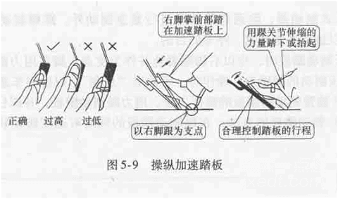

加速踏板
加速踏板是用以控制发动机转速提高或降低的装置。踩下加速踏板，发动机转速升高；抬起加速踏板，发动机转速下降。加速踏板一般设置在驾驶室右侧底部，由右脚操纵。
操作步骤
1以右脚跟踏放在驾驶室地板上作为支点，脚掌轻踏在加速踏板上，用踝关节的伸屈动作，踏下或放松。

2右脚除必须踏下或松拾制动踏板外，其他时间应轻松地放在加速踏板上。操纵加速踏板要做到“轻踏、缓抬，切忌忽抬忽踏或连续抖动。加速踏板回位要领：脚跟不动，将脚尖抬起。
温馨提示
选择的挡位要适当，使发动机大部分时间运行在中等转速和较大节气门，以节省燃料。放松离合器要与踩油门密切配合，动作敏捷。 汽车停驶、熄火前，应先松油门踏板，不得猛轰空油门。 容易出现的错误： 不以脚跟为支点，而把整只脚放在踏板上。这样会使脚掌随颠簸失去平衡， 导致踏板忽高忽低。 汽车行驶时，如已经踏下踏板行程3/4，而发动机转速还不能相应提高时，应换入低一级的档位，再踏下加速踏板进行加速。